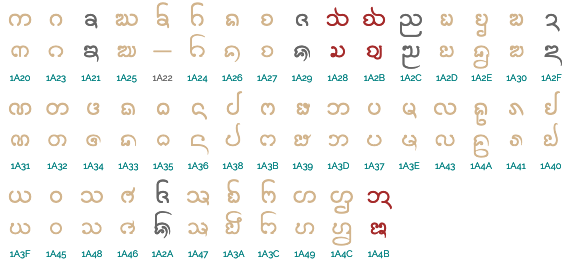

This page brings together basic information about the Tai Tham (Lanna) script and its use for the Tai Khün language. It aims to provide a brief, descriptive summary of the modern, printed orthography and typographic features, and to advise how to write Khün using Unicode.
Origins of the Tai Tham (Lana) script, 13thC – today.
Phoenician
└ Aramaic
└ Brahmi
└ Tamil-Brahmi
└ Pallava
└ Old Mon
└ Tai Tham
+ Burmese
+ Mon
+ Sgaw Karen
+ Shan
+ Chakma
+ Ahom
+ Tai Le
+ Khamti
The Tai Tham or Lanna script is used for three living languages: Northern Thai (Kham Mueang), Tai Lü and Khün. It was also used for Lao Tham (or old Lao) and other dialect variants in Buddhist palm leaves and notebooks.
The Unicode Standard says: "Few of the six million speakers of Northern Thai are literate in the Tai Tham script, although there is some rising interest in the script among the young. There are about 690,000 speakers of Tai Lue. Of those, many people born before 1950 are literate in the Tai Tham script, and newspapers and other literature are regularly produced in the Xishuangbanna region of Yunnan using the script. Younger speakers are taught the New Tai Lue script, instead. The Tai Tham script continues to be taught in the Tai Lue monasteries. There are 107,000 speakers of Khün, for which Tai Tham is the only script."
The repertoires and glyph shapes for Tai Khün and Northern Thai differ somewhat, although both languages can be written with the same script. Different fonts are required to service each.
The script is known by various language-specific and region-specific names, such as Old Xishuang banna Dai or Old Tai Lue in China, Khün in Myanmar, and Tua Mueang, Lanna, or Yuan in Thailand.
The ancestor of the Tai Tham script is Mon, and before that Burmese, originally deriving from Brahmi. There is also a summary page for the New Tai Lü script, which is a simplified version of the Tai Tham script used in southern China.
The Tai Tham script is an abugida, ie. consonants carry an inherent vowel sound that is overridden using vowel signs. In Khün, consonants carry an inherent vowel, pronounced a. See the table to the right for a brief overview of features of the modern Tai Khün orthography.
Tai Tham text runs left to right in horizontal lines. Words are not separated by spaces, however syllables may be separated by ZWSP, as long as they don't fall inside a stack.
Each onset consonant is associated with a high, mid, or low class related to tone. Tone is indicated by a combination of the consonant class, the syllable type (checked/unchecked), plus any tone mark.
Tai Tham has stacked consonants, but these do not necessarily indicate consonant clusters. The script is unusual in that any consonant in a stack can retain its inherent vowel, or be associated with a vowel-sign. The sakot, which produces stacks, is never visible.
Stacks can span word boundaries.
Syllable-initial clusters use 2 dedicated code points for the medial l, and a subjoined letter for medial w.
Syllable-final consonant sounds can be written using 7 special diacritics, but otherwise use ordinary letters, which may or may not be subjoined depending on the context.
The Tai Khün orthography is an abugida with one inherent vowel, and represents vowels using 18 vowel-signs (including 4 prescripts), and 3 consonants. All vowel-signs are combining marks, and are stored after the base character. Vowels are often written differently when they appear in a closed vs. open syllable.
There is an incomplete set of independent vowels, and standalone vowel sounds are typically written using vowel-signs applied to ᩋ.
This page lists 25 composite vowels (made from 13 vowel-signs, and 3 consonants/diacritics). Composite vowels can involve up to 5 glyphs, which can surround the base consonant(s) on up to 4 sides, eg. ᩮᨠᩬᩨᩡ᩠ᨿēkɔ̄ɯ̄a˖y̱
Northern Thai and Khün not only use a slightly different set of characters, but a number of characters have consistently divergeant shapes.
Dashes are used to indicate the location of a consonant or consonant cluster. Prescript vowel-signs have been stored before the hyphen because of the limitations of the font, but in reality all vowel-signs should occur after the consonant they modify.
Click on the sounds to reveal locations in this document where they are mentioned.
Phones in a lighter colour are non-native or allophones.
Vowel sounds
Plain vowels
Diphthongs
In the absence of any other consonant, short vowels are always followed by a glottal stop. Long vowels never occur before a glottal stop.o,143
With one exception, ia, Khün diphthongs all append j or w to a plain vowel.
Most rhymes ending in an approximant (j or w) are regular combinations of vowel nucleus and approximant coda, except that the j or w is usually subjoined to the preceding vowel-sign. These include -iw -eːw -ɛːw -aːw -ɯj -ɯːj -ɤj -ɤːj -aːj -uj.o,152
Owen says that most archaic diphthongs have morphed into plain vowels in Khün speech, however the remnants of the former sounds are seen in the duplication of written forms for eː ɤː oː in the earlier table which are represented by a sequence of vowel-signs.
Consonant sounds
Syllable-initial
labial
alveolar
palatal
velar
glottal
stops
pb
td
c
k
ʔ
aspirated
pʰ
tʰ
cʰ
kʰ
fricatives
f
s
h
nasals
m
n
ŋ
approximants
w
l
j
trills/flaps
r
cʰ seems to be regarded as not a native Khün sound, but rather associated with reading the alphabet out loud and in learned pronunciation of Pali loanwords.o,142
There seems to be general agreement that initial consonant clusters are limited to kw and kʰw, although some have found other sounds in words loaned from Burmese, Sanskrit or Pali.o,142
The initial glottal stop is also pronounced before independent vowels, though they are not listed here.
Syllable-final
labial
alveolar
palatal
velar
glottal
stop
p̚
t̚
k̚
ʔ
nasal
m
n
ŋ
approximant
w
j
The glottal stop is unwritten and non-phonemic, but is pronounced after a short, open vowel.
Structure
Words in the Tai languages are mostly monosyllabic, however multi-syllable borrowings and compound words occur.
Owen describes the stressed phonological syllable in Khün as C(C)V(C)T. The second consonant in an initial cluster is highly restricted. The onset consonant can be a glottal stop. Unstressed syllables are CVT, where the vowel is normally a.
Dialects differ, and experts also differ, but the basic sounds of Khün appear to grosso-modo include the following.
Onset
Medial
Vowel
Final
p pʰ b k kʰ t tʰ d c cʰ ʔ
i iː ɯ ɯː u uː
p t k ʔ
f s h
e eː ɤ ɤː o oː
m n ŋ
ɛ ɛː a aː ɔ ɔː
m n ŋ
j r l w
(r) l
w j
Final ʔ occurs only after short vowels.
Vowels
Dashes are used to indicate the location of a consonant or consonant cluster. Prescript vowel-signs have been stored before the hyphen because of the limitations of the font, but in reality all vowel-signs should occur after the consonant they modify.
The following is the set of characters needed to write vowels, as described in this section, grouped by general category.
a following a consonant is not written, but is seen as an inherent part of the consonant letter, so ka is written by simply using the consonant letter ᨠ.
Post-consonant vowels
Vowels following consonants using 18 vowel-signs (including 4 prescripts), and 3 consonants. All vowel-signs are combining marks, and are stored after the base character. Vowels are often written differently when they appear in a closed vs. open syllable.
This page lists 25 composite vowels (made from 13 vowel-signs, and 3 consonants/diacritics). Composite vowels can involve up to 5 glyphs, which can surround the base consonant(s) on up to 4 sides.
Vowel-signs
Non-inherent vowel sounds that follow a consonant can be represented using vowel-signs, eg. ki is written ᨠᩥ.
Characters that produce vowel signs are all combining characters.
In principle, all vowel-signs are typed and stored after the base consonant, whether or not they precede it when displayed. The font takes care of the glyph positioning. However, the Unicode Consortium is currently examining the coding model for Tai Tham. There is a possibility that prescript vowel-signs may be stored before the consonant in future.
Combining marks used for vowels
Tai Khün uses the following vowel-signs. They may be used on their own, or in combination with others (see compositeV).
ᩥ␣ᩦ␣ᩧ␣ᩨ␣ᩩ␣ᩪ␣ᩮ␣ᩰ␣ᩯ␣ᩫ␣ᩬ␣ᩳ␣ᩡ␣ᩣ␣ᩤ␣ᩢ␣ᩭ␣ᩱ
1A64 and 1A63 are both used to represent the same phoneme. The choice of which is used is a matter of spelling. The taller version is typically (Owen says only, for Khün o,152) used after ᨷ ᩅ ᨴ ᨵ ᨣand avoids confusion with otherwise similar shapes, eg. ᩅᩣ looks like ᨲ. Some textbooks also recommend it's usee after ᨧ ᨻ ᩁ ᨽ
Northern Thai, also uses 1A72, however, 1A6D is not used in Northern Thai.u,655
Seven vowel-signs are spacing marks, meaning that they consume horizontal space when added to a base consonant.
Pre-base vowel-signs
ᩮ␣ᩰ␣ᩯ␣ ␣ᩱ
Four vowel-signs appear to the left of the base consonant letter or cluster, eg. ᨠᩱ᩵
These combining marks are in principle stored after the base consonant: the font places the glyph before the base consonant. However, the Unicode Consortium is currently examining the coding model for Tai Tham. There is a possibility that prescript vowel-signs may be stored before the consonant in future. Also, some fonts already require this kind of handling, especially for dealing with complex combinations of characters.
Consonants pronounced as vowels
The following letters can be used with other vowel-signs or in subjoined form to represent a vowel sound.
᩠ᨿ␣᩠ᩅ␣ᩋ
The sequence 1A60 1A3F is pronounced as the diphthong ia in Northern Thai and as eː in Khün.
The sequence 1A60 1A45 is pronounced as the diphthong ua.
Both of these characters also appear as a part of the combinations described below.
ᩋ on its own represents the standalone version of the inherent vowel, ʔa. It is used as a base for other independentvowels.
Composite vowels
All vowels represented by combinations of the above characters:
ᩮ–ᩡ␣ᩰ–ᩡ␣–᩠ᩅᩫᩡ␣–᩠ᩅᩫ␣ᩯ–ᩡ␣ᩮ–ᩬᩨᩡ␣ᩮ–ᩨ–␣ᩮ–ᩬᩨ␣ᩰ–ᩬᩡ␣ᩋᩣ␣ ␣ᩮ–᩠ᨿ␣–ᩧ᩠ᨿ␣–ᩨ᩠ᨿ␣–ᩩᨿ␣–ᩴ᩠ᨿ␣ᩮ–ᩅ␣ᩮ–ᩬᩨ᩠ᨿ␣ᩮ–ᩬᩨᩡ᩠ᨿ␣ᩯ–ᩅ␣ᩓ᩠ᩅ␣–᩠ᩅ᩠ᨿ␣ᩱ–᩠ᨿ␣–ᩣ᩠ᨿ␣ᩮ–ᩢᩣ␣ᩮ–ᩢᩤShow which combinations contain a given character:
The following list shows where vowel-signs are positioned around a base consonant to produce vowels, and how many instances of that pattern there are. The figure after the + sign represents combinations of Unicode characters, The list includes subjoined WA and YAand the postfixed ᩋ.
Vowel components can occur concurrently on 4 sides of the base, eg. ᩅᩮᩬᩨᩡ.
Distribution of vowel elements is as follows:
ᩢ ᩫ ᩳ ᩴᩘ
ᩮ ᩯ ᩱ ᩰ ᩲ
ᩡ ᩅ ᩣ ᩤ ᩋ
ᩡ
ᩩ ᩪ ᩬ
ᩭ ᩠ᨿ
Locations where vowel elements can appear, including in complex vowels.
Characters that don't appear in the combinations:
ᩥ␣ᩦ␣ᩪ␣ᩭ␣ᩳ
Standalone vowels
Vowel-signs
The standard way to represent vowels not preceded by a consonant in Tai Khün is to use ᩋ with a vowel-sign, eg. ᩋᩧ᩠ᨷ
Independent vowels
Tai Tham also has an incomplete set of independent vowel letters. The set includes a character to represent the inherent vowel sound, but doesn't cover all such possible vowels.
ᩍ␣ᩎ␣ᩏ␣ᩐ␣ᩑ␣ᩒ␣ᩋ
The 6 vowel letters are used in syllable-initial position where there is no consonant onset, eg. ᩑᨠ
The use of independent vowels is lexically constrained.
ᩒ is not used in Northern Thai.u,654
Tones
With the high/low categorisation of consonants, Tai Tham writing needs only the two combining tone marks below to indicate one of 6 possible phonetic tones.
᩵␣᩶
The Unicode block for Khün contains 3 more tone marks, although they are rarely used.
᩷␣᩸␣᩹
Owen describes various studies of tones in Khün which reach slightly different conclusions.oIn addition, some studies conclude that there are 6 tones in total, and others 5. The table below shows Owen's 6-tone system.
Tone
Representations
Example
falling-rising
˨˩˥
215
kaː˨˩˥crow
high
˦˦
44
kaː˦˦car
low-rising
˩˧
13
kaː˩˧charm
low
˩˨
12
kaː˩˨price
mid glottalised
˧˧ʔ
33ʔ
kaː˧˧ʔdance
high falling
˥˩
51
kaː˥˩trade
If there is a vowel over or below a consonant or consonant stack, the tone mark follows the vowel in storage, and is displayed above or alongside the vowel.
Otherwise, the tone is input after the consonant, ie. before a vowel sign that is displayed to the right or below, and appears over the consonant.e
The default fonts used here expect the tone to be typed after a lefted vowel if there is one; after a vowel above, if there is one; before a vowel to the right; and doesn't seem to matter wrt low vowel. See this test. Noto agrees except for lefted vowels.
The following chart shows how to tell which tones are associated with a syllable.
Consonant
Checked?
Tone mark
Tone
high
checked
short
2
long
3
open
-
1
᩵
3
᩶
5
mid
checked
short
2
long
3
open
-
2
᩵
3
᩶
5
᩷
2
᩸
1
᩹
6
low
checked
short
6
long
4
open
-
2
᩵
4
᩶
6
Vowel sounds mapped to characters
This section maps Northern Thai vowel sounds to common graphemes in the Lanna orthography, where o indicates an open syllable, c a closed syllable, and s a standalone vowel. Click on a grapheme to find other mentions on this page (links appear at the bottom of the page). Click on the character name to see examples and for detailed descriptions of the character(s) shown.
Sounds listed as 'infrequent' are allophones, or sounds used for foreign words, etc.
For some diphthongs ending in -j or -w, Owen indicates that phonetic sequences exist. but offers no examples. Based on other examples, it is assumed here that -j is formed using sakot+ya, and -w using sakot+wa, except where the preceding vowel-sign extends below the baseline (such as for uj).
The lists below show consonants in the Tai Khün repertoire.
High class
ᨸ␣ᨹ␣ᨲ␣ᨳ␣ᨮ␣ᨧ␣ᨨ␣ᨠ␣ᨺ␣ᩈ␣ᩆ␣ᩇ␣ᨡ␣ᩉ␣ᩀ
Mid class
ᨷ␣ᨯ␣ᩋ
Low class
ᨻ␣ᨽ␣ᨴ␣ᨭ␣ᨵ␣ᨰ␣ᨩ␣ᨣ␣ᨼ␣ᨫ␣ᨪ␣ᨥ␣ᨤ␣ᩌ␣ᨾ␣ᨶ␣ᨱ␣ᨿ␣ᨬ␣ᨦ␣ᩅ␣ᩁ␣ᩃ␣ᩊ
High class nasals & liquids with HA
High and low consonants usually come in pairs, but where they don't the high variant is normally given by subjoining the low consonant below ᩉ, eg. ᩉ᩠ᨶᩧ᩵ᨦ
A few consonants have different phonetic realisations in Northern Thai, and ᨢU+1A22 LETTER HIGH KXA is used in Northern Thai but not by Tai Khün.
The letter A
ᩋ represents a glottal stop. It can be used with vowels at the beginning of a syllable, eg. ᩋᩧ᩠ᨷ
It can have very different shapes, as shown by the Northern Thai font and the Khün font (respectively):ᩋᩋ
Special consonants
ᩛ␣ᩓ␣ᩔ
The first of these is a special-use consonant diacritic. The second two are ligatures.
1A5B represents two different functions with the same appearance. It represents ᨮe in ᩈᨱᩛᩣ᩠ᨶ And it represents ᨻ in ᩋᨾᩛ Compare with the somewhat rare subjoined form,e eg. ᨷᩢᨱ᩠ᨻᨷᩩᩁᩩᩇ
Khün uses ᨭᩛ instead of ᨮ.e
ᩓ represents the combination ᩃᩯ, eg. ᩈᩮᩓ᩠ᩅ᩶
ᩔ represents geminated ᩈ.
ᩚ
1A5A moves the stack upwards. The normal rendering of kp̄˖p̄ʰ would be ᨠᨻ᩠ᨽ but in some Tai Lü words this sign is used instead,e eg. ᨠᨽᩚNote, however, that this changes the typing order of the consonants, since a combining character has to be typed after the base. The transliteration now becomes kp̄ʰp̆.e
Subjoined consonants
Tai Tham is unusual in that subjoined consonants do not only appear where there are consonant clusters. There is a natural tendency to attempt to stack consonants, usually 2 high, whenever possible.
1A60 is an invisible character used to produce the subjoined form of a consonant, eg. compareᨠᨠᨠ᩠ᨠ
Unlike the virama in most brahmi-derived scripts, sakot doesn't necessarily kill the vowel between two consonants, nor does it create conjuncts in the sense of merged shapes. For example, in ᨨ᩠ᩃᩣ᩠ᨯ the inherent vowel after c is not suppressed.
Also unusually, sakot can follow a vowel-sign. For example, in ᩈᩣ᩠ᨾ the sakot is used to position the final consonant in the syllable below the vowel-sign. This is quite common. A subjoined consonant can also follow a digit, eg. ᪓᩠ᨴ
ᩈᩣ᩠ᨾ
A subjoined consonant positioned below a vowel-sign.
Tai Tham will usually attempt to subjoin non-initial consonants, although generally only two characters deep. Sequences of 2 subjoined characters exist, but in Tai Khün the second subjoined character joins to the right of the stack, rather than sitting below it, eg. ᨠ᩠ᩅ᩠ᨿᩁ
In Northern Thai, however, they may all be stacked, eg. ᨠ᩠ᩅ᩠ᨿᩁ
A consequence of this shallow subjoining is that a subscript vowel will typically cause a final consonant to not be subjoined, eg. ᩃᩪᨠ However, this is not always the case. In Khün, ᨧ᩠ᨷᩪ the final b is subjoined under the onset consonant, and the normally subscript vowel is moved to the side.
In Northern Thai, however, this may be displayed as a single stack, ie. ᨧ᩠ᨷᩪ
This list shows consonants in their normal and subjoined forms. Not all consonants traditionally have subjoined forms, but modern innovations in borrowed terminology suggest that fonts should provide them for all consonants except the old vocalic letters. u,654 Nevertheless, the default A Tai Tham KH New font used on this page doesn't support subjoining for a number of glyphs that are supported in other fonts.
Subjoined consonants are not only syllable-final consonants. The first consonant in a following syllable may also be subjoined (final r is pronounced as n),eu,654 eg. ᨳ᩠ᨶ᩻ᩫᩁ
Silent consonants
᩼
1A7C is written over a consonant (normally in final position) when that consonant is not to be pronounced.
Frequently used in loans from languages with consonant clusters in the coda such as Pali,o,149 eg. ᩈᩫ᩠ᨾᨷᩪᩁ᩠᩼ᨱ or English ᨼᩥ᩠ᩃ᩼ᨾ Northern Thai would use 1A7A, ie. ᨼᩥ᩠ᩃ᩺ᨾf̱i˖ḻ˟m̱fim²
Onsets
These combining characters are used to represent the second consonant in syllable-initial clusters.
ᩕ␣ᩖ
In addition, a subjoined w̱ is often found in a syllable-initial cluster, eg. ᨣ᩠ᩅᩣ᩠ᨿ
Other syllable-initial clusters include the combination of ᩉ plus a subjoined low class consonant to give a high class version, as mentioned just above.
Medial characters are useful, as they can signal the difference between a consonant cluster and an initial-final sequence, ie. using a subjoined l. Some fonts, however, don't make that distinction clear.h
Finals
Tai Tham text commonly renders syllable-final consonants using regular consonant code points, eg. ᩑᨠ but sometimes the special combining characters shown below are used.
When regular consonants are used they are commonly subjoined, eg. ᨠᩣ᩠ᩁ but not always. For example, when preceded by a subscript vowel a final consonant may be rendered on the baseline, eg. ᩃᩪᨠ On the other hand, sometimes in Khün the consonant is subjoined and the subscript vowel is moved to the side of the stack, eg. ᨧ᩠ᨷᩪ
In Lanna, all three may be stacked, ie. ᨧ᩠ᨷᩪ
In either case, due to font design or USE (the Universal Shaping Engine) the characters may have to be typed in an order that departs from the spoken order so that they look as expected.
The following diacritics are sometimes used for syllable-final consonants. For more details about usage, click on the links to the character notes.
᩺␣ᩙ␣ᩴ␣ᩘ␣ᩜ␣ᩝ␣ᩞ
Owen says that the superscript consonants in Kühn are limited to final r (1A7A) and ŋ (1A59) in syllables where a subscript vowel prevents the use of a subscript final consonant. Superscript forms are mainly found in handwritten text, whereas regular forms of these consonants in postscript position are the norm for printed texts.o,145
1A7A, has a different shape in Northern Thai and is not used for syllable-final consonants, but rather as a silence marker. Note that a syllable-final r is pronounced n.
1A74 may be regarded as a vowel, but it doesn't introduce any vowel sound other than the inherent vowel when used above a consonant on its own.
1A58, has very different shapes in Northern Thai and Khün:ᩅᩘᩅᩘ
1A5C, 1A5D and 1A5E appear to be alternative shapes for the normal subjoined consonants, used per writer preference (follow the links for more information). The latter two are rarely used in Khün.
Consonant to script mapping
This section maps Khün consonant sounds to common graphemes in the Lanna orthography, where h indicates high class, m is mid class, l is low class, and f indicates a final consonant. Click on a grapheme to find other mentions on this page (links appear at the bottom of the page). Click on the character name to see examples and for detailed descriptions of the character(s) shown.
Sounds listed as 'infrequent' are allophones, or sounds used for foreign words, etc.
Although the same code points are used, there are some significant and consistent differences in the glyphs shapes used for characters in the Tai Khün (top) and Northern Thai (bottom) repertoires.
fig_writing_mode shows the differences for the consonants of the fonts used for this page.

Comparison of glyphs for a Tai Khuen and Northern Thai font.
Context-based shaping & positioning
There is not so much contextual shaping in Tai Tham as in many other Brahmi-descended scripts. One particularly noticeable example of contextual shaping is the realisation of 1A2C 1A60 1A2C, which moves the initial character upwards rather than subjoining the second, ie. ᨬ᩠ᨬ
Another common ligature is ᨶᩣ which is composed of 1A36 1A63. It forms even when NA has non-spacing subscripts, and even MEDIAL RA, eg. ᩋᩫᨶ᩠ᨲᩕᩣ᩠ᨿ Pali must regularly handle the nominative singular ending for present participles,rᨶ᩠ᨲᩮᩣṉ˖teā
Placement of tone marks often involves special shaping and positioning. See the positions in the examples in fig_tone_plus_vowel.
ᨠᩥ᩶ ᨠᩥ᩵
ᨠᩥ᩶ ᨠᩥ᩵
Positioning of tone marks next to a superscript vowel in the Lanna Alif font (top), and the A Tai Tham KH New font (bottom).
In the A Tai Tham KH New font, a 2nd-tone mark following 1A62 loses its uptick to create two parallel lines, eg. ᨡᩮᩢ᩶ᩣ
Typographic units
Word boundaries
Spaces separate phrases. There is no separation of individual words.
A new word may start with a subjoined consonant. Stacking is performed across word boundaries. This means that operations such as line-breaking, word highlighting, etc. have to use an orthographic syllable unit which differs from the underlying phonetic syllables.
Graphemes
tbd
Punctuation & inline features
Phrase & section boundaries
᪨␣᪩␣᪪␣᪫␣?␣!␣᪣␣᪤␣᪥␣᪭␣᪦␣᪬
Tai Khün uses a variety of native punctuation, and onlly a couple of ASCII code points.
The following punctuation marks have "progressive values of finality".
᪨
᪩
᪪
᪫
European punctuation such as question marks and exclamation marks are also used.
᪣, ᪤, ᪥, and ᪭ are all used as section starters, sometimes in conjunction with other punctuation,e eg. ᪩᪥᪩᪭ᩣ
To close a section, use ᪦ and/or ᪬, eg. ᪦᪦᪩᪩᪦᪩᪩᪦᪩᪬᪦᪦᪬
Bracketed text
(␣)
Tai Khün commonly uses ASCII parentheses to insert parenthetical information into text.
start
end
standard
(
)
Quotations & citations
“␣”
Tai Khün texts use quotation marks around quotations. Of course, due to keyboard design, quotations may also be surrounded by ASCII double and single quote marks.
start
end
initial
“
”
Abbreviation, ellipsis & repetition
Repetition
ᪧ indicates reduplication of the preceding word, eg. ᨴᩩᨠᪧ ṯukᪧ tuk⁶tuk⁶ every Adverbs, for example, are often derived by reduplicating an adjective.o,149
Line & paragraph layout
Line breaking & hyphenation
Opportunities for line breaking are lexical, but a line break may not be inserted between a base letter and a combining diacritic.u,656